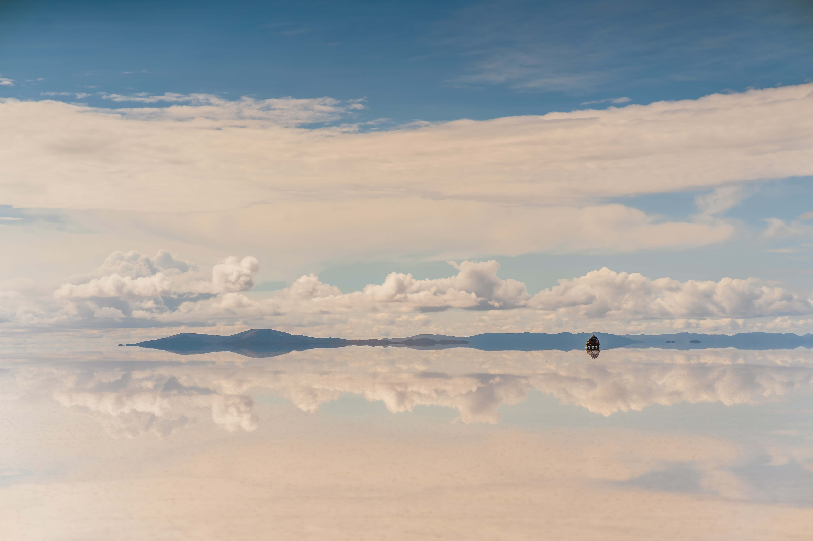
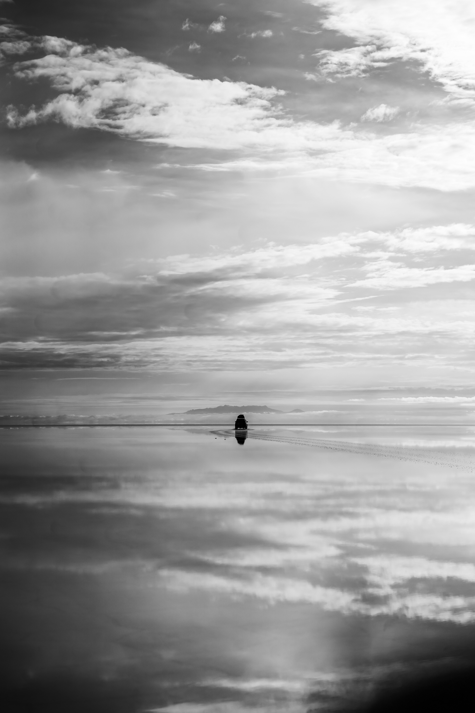

Uyuni 
About Section
“In Bolivia there's no sea, but a little piece of heaven.”
Salar de Uyuni is the world's largest salt flat, located in southwest Bolivia near the Andes. The salt flat is famous for its surreal, mirror-like reflections during the rainy season, creating a dreamlike landscape that attracts visitors from around the world. Salar de Uyuni is also rich in lithium, a key resource for batteries. In Bolivia there's no sea, but a little piece of heaven — and Salar de Uyuni is the perfect example of that.